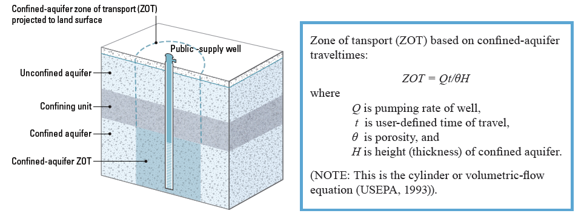

TOOL: Approach for evaluating potential for multi-aquifer wells to affect a public-supply well
Protecting the area at land surface above a confined-aquifer zone of transport can help prevent an unidentified multi-aquifer well
from shunting contaminated groundwater across the confining unit and affecting the public-supply well within a
timeframe of interest. A simple way to gain insight into the potential for multi-aquifer wells to affect a confined-aquifer public-supply
well is to estimate a zone of transport (ZOT) for the public-supply well within the confined aquifer and then
evaluate the likelihood that a multi-aquifer well lies within that zone. For this purpose, the ZOT would be defined
solely on the basis of confined-aquifer traveltimes—traveltimes through the unconfined aquifer and confining unit
would not be considered—because multi-aquifer wells anywhere within a confined-aquifer ZOT are capable of
allowing contaminated water to reach a public-supply well within a timeframe of interest.
A zone of transport equation for confined aquifer-travel times and a calculation tool are given below.

More information:
Johnson and others, 2011
USEPA, 1993
|